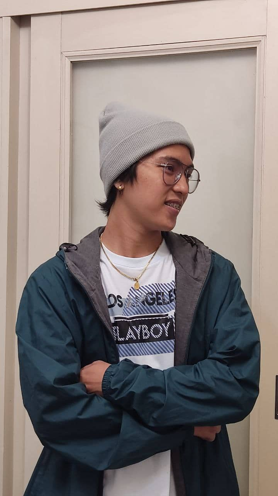
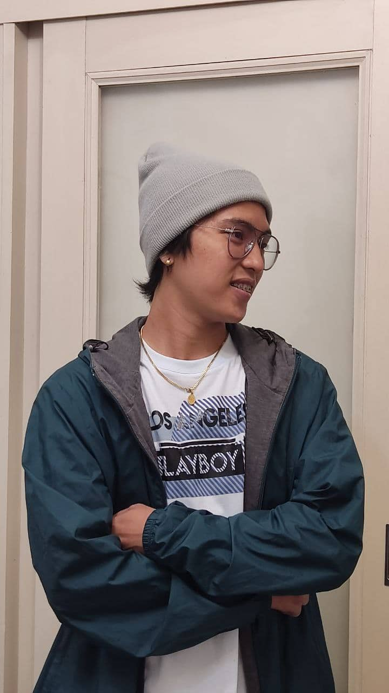
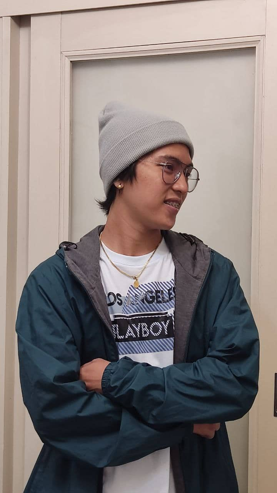

Documents
 


Hello! My name is Christian Paolo D. Maala, 26 years old and a first year college student in Global Reciprocal Colleges (GRC). I am the eldest child. I have a 5 number of siblings. I live at Barangay Bisig Valenzuela City. I am currently taking a Bachelor of Science in Information Technology in GRC. I take up this course because we live in a digital age whereas the technology has made the world better, faster and more connected. It will help me to learn more about technologies because technology is our future. It will help me to become a business analyst someday. I describe myself as an responsible person. As I am the eldest child, I worked at a young age to help my family in their needs. I didn't finish my college then because I put first my siblings to finish their studies. And now I want to continue my study. I want to learn and to be a degree holder and to have a better job that will help me to achieve my dreams. I love playing volleyball and watching movies. I am currently watching The Good Doctor in netflix. It was great and a must watch series. I also love cooking, it makes me happy and productive. I also watch any vlogs to learn something by them. I am a funny person, there is no day that I teased my sisters and my brothers. It's my way to show love to them. I am not the type of person who socialize more because I want to spend my time in valuable things. My philosopy in my life is I don't have one. Except for this. "Everybody is broken except in different ways and what keeps us together as humankind is that none of us have it figured out." Every single day is a struggle. Every single day is the process of reconciling yourself with the impossibility of ever living up to your own expectations. And I think that's okay. Because I think that you are self-worth and your personality is based on your ability to face that challenges. Every single day, day after day you keep on trying to be you. That's what life is.

Are you interested to learn Web Developing?
Click Here